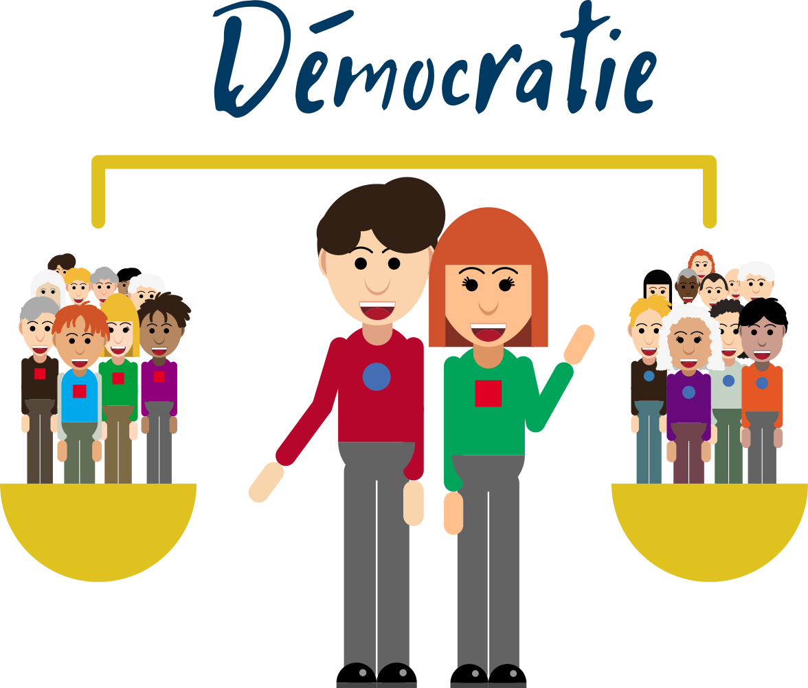

Le parcours
Boucle de +/- 3,5 km
Le trajet contient 6 Points Of Interest ou POI
Départ/Arrivée
À l’Office du Tourisme de Libramont-Chevigny
(Grand Rue 24 à 6800 Libramont-Chevigny).
Cette maison fut celle d’une artiste peintre de grande renommée, lauréate du prix de Rome en 1922 : Marie Howet (1897-1984).
=> Tourner à droite et prendre la Grand’rue vers le pont du chemin de fer.
Instructions
La carte

Les questions
1. Devant la Bibliothèque communale de Libramont-Chevigny
Celle-ci fait partie du pôle média culturel avec le Centre culturel, le cinéma, TV Lux et Vivacité. N’hésitez pas à pousser les portes du Centre culturel et de la Bibliothèque communale pour découvrir leurs expositions temporaires.

En Belgique, tout le monde a le droit de s’exprimer librement. Existe-t-il cependant des limites quant à ce que l’on peut dire ou ne pas dire ?
- Non, il n’y a pas de limites légales à la liberté d’expression
- Oui, il est interdit par la loi belge de tenir des propos incitant à la haine
- Oui, il est interdit par la loi de parler de sa vie privée dans l’espace public
La loi belge interdit les propos racistes, xénophobes (qui sont hostiles à ce qui est étranger), discriminatoires (qui opèrent une différenciation entre personnes ou groupes humains), négationnistes (qui nient l’extermination des Juifs durant la Seconde Guerre mondiale), diffamatoires (qui nuisent à quelqu’un·e sans justification) ou injurieux.
=> Continuer sur l’avenue de Houffalize. Au rond-point, se diriger vers la gauche sur la rue des Mélèzes.

2. Devant la Haute Ecole Robert Schuman,
qui forme dans 3 domaines : le paramédical, l’économique et le technique.

Laquelle de ces propositions figure parmi les premières mesures mises en place par le régime nazi à son arrivée au pouvoir en 1933 ?
- La mise en place d’un couvre-feu.
- La modification du contenu des programmes scolaires.
- La création de centres d’extermination.
Pour asseoir son pouvoir, un régime totalitaire s’assure d’avoir le contrôle des idées véhiculées par le système d’éducation officielle. Voici en exemple un des problèmes que l’on pouvait trouver dans le cahier de mathématiques d’un élève allemand lors de la Seconde Guerre mondiale :
« Un aliéné coûte quotidiennement 4 marks, un invalide 5,5 marks, un criminel 3 marks. Dans beaucoup de cas, un fonctionnaire ne touche que 4 marks, un employé 3,65 marks, un apprenti 2 marks. Faites un graphique avec ces chiffres. D’après des estimations prudentes, il y a en Allemagne environ 300 000 aliénés et épileptiques dans les asiles. Calculez combien coûtent annuellement ces 300 000 aliénés et épileptiques. Combien de prêts aux jeunes ménages à 1 000 marks pourrait-on faire si cet argent pouvait être économisé ? »
(Manuel scolaire nazi, cité par A. Grosser, Dix leçons sur le nazisme, Fayard, 1976).
=> Continuer jusqu’au bout de la rue de la Cité et ensuite sur la rue du Serpont vers le pont du chemin de fer.
3. Square du cheval Gary.
Réalisé par le sculpteur Francis Daras et inauguré en 2000, point de croisement avec le circuit historique 40-45.

L’Armée des Partisans, l’Armée Secrète ou encore le Front de l'Indépendance étaient des organisations composées de résistant·e·s durant la Seconde Guerre mondiale. Dans la multitude des comportements possibles face à un régime hostile et inégalitaire, un·e résistant·e c’est quelqu'un·e qui :
- n’est pas d’accord et part vivre ailleurs pour oublier ;
- n’est pas d’accord et s’organise pour lutter activement, parfois en prenant de gros risques personnels ;
- n’est pas d’accord et se contente de le penser.
Selon le contexte et la période, résister comporte plus ou moins de risques. Par exemple, manifester pacifiquement est accepté en Belgique en 2020, ce n’est pas le cas dans d’autres pays comme la Russie où nombre de manifestant·e·s pacifiques ont été arrêté·e·s arbitrairement ces dernières années.
=> Traverser le pont et continuer tout droit sur l’avenue de Bouillon. Au feu rouge, prendre à gauche vers la rue du Monument.
4. Devant le monument aux morts.
Celui-ci a été dessiné en 1920 par l’architecte Joskin et réalisé par le tailleur de pierres Honoré Hanot.

Devant vous se tient un monument commémorant notamment la Seconde Guerre mondiale. Pendant combien de temps la Belgique fut-elle occupée par les nazis lors de la Seconde Guerre mondiale ?
- De janvier 1939 à septembre 1944.
- De mai 1940 à décembre 1945.
- De mai 1940 à septembre 1944.
Lors de la Seconde Guerre mondiale, les conditions de vie des citoyen·ne·s étaient difficiles. Un exemple est celui des interpellations et arrestations arbitraires, les citoyen·ne·s n’étant plus protégé·e·s par la justice comme ils auraient dû l’être. Les personnes emprisonnées en Belgique ou déportées dans des camps nazis n’étant souvent pas conduites devant un tribunal et n’ayant pas de procès équitable justifiant de cet emprisonnement.
=> Traverser la Place communale vers l’Administration communale en longeant l’église.
5. Devant l'Administration communale de Libramont-Chevigny.
Les anciens bureaux étaient situés dans le bâtiment en pierre de la Chambre de Commerce puis ont déménagé à l'endroit actuel en 1988. Le bâtiment a été rénové en 2017.

L’histoire de la démocratie, c’est aussi celle du droit de vote. En quelle année les femmes belges ont-elles obtenu le droit de vote aux différents niveaux de pouvoir ?
- 1908.
- 1928.
- 1948.
Le premier pays européen où les femmes ont acquis le droit de vote est la Finlande en 1906. Le Vatican est en 2020 le dernier pays européen à ne pas autoriser le droit de vote des femmes. Ce droit a été obtenu dans divers pays suite à la lutte de plusieurs femmes ou groupes de femmes, parfois soutenues par certains hommes et souvent réunies en associations, qui ont manifesté, écrit, protesté afin d’avoir les mêmes droits que tout le monde.
=> Traverser à nouveau la Place communale vers la Grand’rue.
6. Institut Saint-Joseph, section maternelle/primaire.
Point de croisement avec le circuit historique 40-45.
Vidéo de conclusion de la balade :